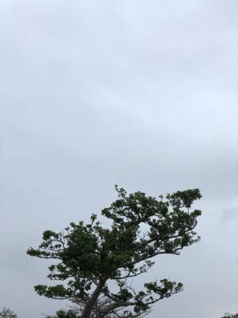

うるがいの話 ある日
最新: 運がいいかな【うるがいの話 ある日】とは 一日だけのプログです
『うるがいの話』の最新一日だけのプログで、通信料が少なく経済的だ。カニの画像をクリックすると全ての日付が載る『うるがいの話』サイトを表示します
|
|
【うるがいの話】 うるがい(ｳﾙｶﾞｲ urugai)とは、『もずくがに』の名前でとても大きくなります。 |
|---|---|
|
|
【カミマヤーの話】 猫のことを方言でマヤーといいます。カミマヤー（kamimayaa）とは、神の猫のことです。 |
|
【タナガーの話】 たながー（ﾀﾅｶﾞｰtanagaa）とは手長えびのことで、何種類かあり大きいのは車 エビぐらいになります。 |

|
【ぶながぁの話】 ぶながー(bunagaa)とは、赤い髪の毛、赤い身体、そして身長は１ｍ２０ｃｍ ぐらい、川の蟹を食べているの目撃された。場所は沖縄県国頭郡大宜味村のと ある村僕の隣近所に住んでいる爺さんから、聞いた話です。 |
|
|
【ギーマの話】 ギーマ(giima)とは、山原の里山に咲くスズランに似た、 花を付けます。実は食べられます、 気が付くと口の周りが紫になっています。 |
2022年01月17日 (月）運がいいかな
17:53

資料返却のお願いのメールが、県立図書館から届いた。予約が入ったため貸出
の延長が行えなかった『それはあくまで偶然です 運と迷信の統計学』という
本を返却期限が過ぎているとのこと。お、返却期限の翌日の１０時にメールが
届くということは、図書館のシステムで自動的に起きっているナ。先週の火曜
日にコドモが『LIFE SHIFT(ライフ・シフト) 100年時代の人生戦略』（ ヤフ
ーの知恵袋参照 ：コドモは忙しくて全く読んでいない）の本を同じく期限延長
したかったが、延長出来なかったと家に本を持ってきたので期限の４日延滞で
近くの市立図書館へ返したばかり（市立図書館は人が電話で延滞の督促をして
いること判明した）、親子そろって。ハウツーの本なのでで普通は読まないが
せっかくなので返す前に読んだ。人生８０歳から１００歳まで生きるぜとドウ
スルという本だった、なんと今の副業の活動とリンクしている。この本売れ筋
なのか実践編の２が既に発売されている。ん、でも読みたいとは思わないが。
スピリチュアルの師匠が勧めるスピリチュアルメールで『心理の言葉』の本を
講座で使うが、”『この講座は本を事前に購入・・』「本が売り切れてました
。再販されてから参加でいいですか」”という人がいた。そんなのいつ再販さ
れるか分からんゼと、その日Ａｍａｚｏｎのサイトを見ると￥５，５９７より
３中古品とあり新品はない。ふーん、高いナと思っていた。翌日、そもそも新
品の値段はいくらなんだろうと、Ａｍａｚｏｎのサイトを訪れると￥２，８６
０より新品１と表示しているではないか！、こんなタイミングってあるのかと
直ぐに購入した。なんて運がいいと思ったが『それはあくまで偶然です 運と
迷信の統計学』によれば、それはただの偶然とのこと。あっそかな、とそのあ
とＡｍａｚｏｎのサイトを見ると２日間は新品は無かったが、昨日から一気に
５冊入荷とあり、今日は７冊入荷予定と増えている。スピリチュアルの講義に
関心ある人達が、Ａｍａｚｏｎのサイトを訪れているようだ。長文になってし
まった・・、今日はここまで。
１７時４１分 ビットコインの総資産 ￥１４、１８９↓